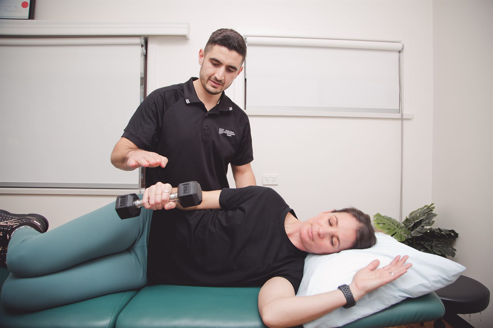

Our Dapto clinic provides physiotherapy for shoulder pain affecting lifting, reaching or sleep. Assessment guides the choice of exercises, activity changes and hands-on care for your particular shoulder problem.

Shoulder symptoms can begin after a fall or lifting incident, or develop gradually. Rotator cuff-related pain, frozen shoulder, arthritis and instability are different problems, so they need different advice.
The rotator cuff is a group of muscles and tendons involved in moving and supporting the shoulder. Pain around it can make reaching or loading the arm difficult. Frozen shoulder typically involves a marked loss of movement as well as pain. Instability can feel as though the shoulder slips or may give way.
The location of pain alone does not establish the diagnosis. The neck can also contribute to arm symptoms, particularly when tingling or numbness is present. We consider these possibilities during assessment.
Reaching a shelf, putting on a shirt and lifting equipment place different demands on the shoulder. Tell us which tasks hurt, whether your strength has changed and how symptoms behave overnight.
We compare shoulder movement and strength and, where appropriate, check neck movement or nerve-related signs. After an injury, the history helps determine whether you need medical assessment or imaging before rehabilitation.
Bring any scan reports or surgical instructions you already have. You do not need to arrange a scan simply to book an assessment. Test results are considered alongside your symptoms and what you can do.
Your plan may begin with ways to keep using the arm within a manageable range. Adjusting the height of a task or reducing a lifting load can make it possible to stay active while the shoulder is sore. We will discuss which changes are relevant to your work or home routine.
Exercises may focus on movement, shoulder strength or the specific demands of your activity. We show you the exercises, check how they feel and explain how to judge the response between visits. Hands-on treatment may be used alongside rehabilitation where appropriate.
Returning to heavy work, swimming or gym training requires more than being comfortable at rest. Later sessions can assess the movements and loads involved, then guide a staged return. For a sporting injury, see our sports rehabilitation page.
If symptoms remain difficult to manage or the diagnosis is uncertain, we discuss medical review. Physiotherapy does not replace a surgeon's restrictions after an operation or a dislocation requiring urgent care.
Seek urgent medical assessment for a shoulder that looks out of shape, severe pain after a fall, inability to move the arm, persistent loss of feeling, or a hot swollen joint with fever. A sudden loss of strength after injury also needs prompt review.
Call 000 if shoulder or arm pain occurs with chest pressure, shortness of breath, sweating or feeling faint. Do not assume these symptoms are a shoulder strain.
Hands-on treatment and targeted exercise for back and neck pain.
Read moreServiceDiagnosis, treatment and staged return-to-sport rehabilitation for athletes at every level.
Read moreFunding pathwayWorkers compensation physiotherapy focused on a safe, sustainable return to work.
Read moreWear a top that allows your shoulder to be examined and bring relevant reports. You can book privately without a GP referral; see fees and rebates for funded appointments.